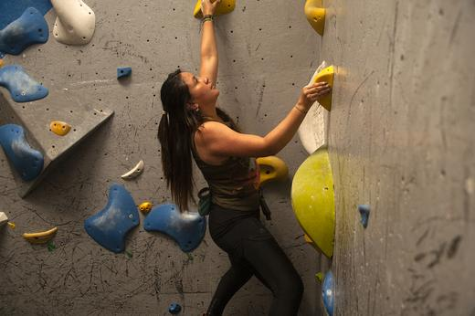
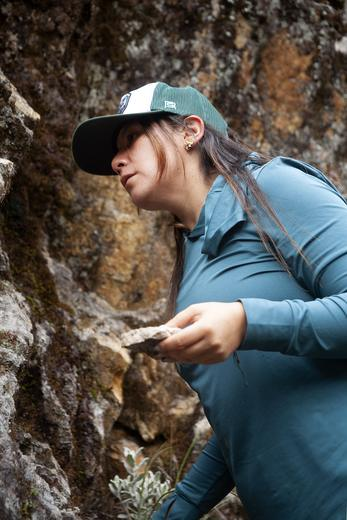
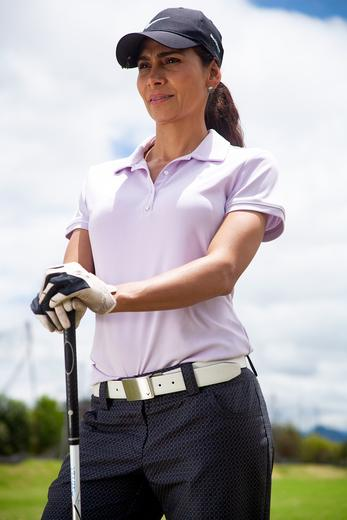
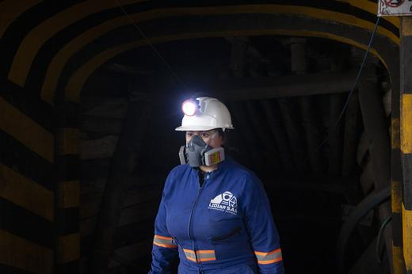

Ocho mujeres que trabajan en ingeniería y geociencias. Primero conocemos lo que hacen, después descubrimos lo que las mueve y, finalmente, escuchamos quiénes son.
¿Acaso las mujeres en áreas STEM necesitan ganar un premio extraordinario para que su trabajo sea visible?
La respuesta no cabe en una sola cifra. No falta talento: persisten barreras de acceso, permanencia, reconocimiento y promoción.
Aquí la profesión no es una etiqueta: es una forma de leer el mundo, resolver problemas, cuidar, liderar, construir, investigar y abrir caminos. Lee la investigación.
de la matrícula en educación superior en Colombia son mujeres.
de las personas graduadas en ingeniería entre 2012 y 2023 fueron mujeres.
No todo avanza: en ingeniería de sistemas, las mujeres eran el 42,84 % de las graduaciones a comienzos de siglo. En 2025 fueron el 17,37 %.
Investigación
Participación, brechas y condiciones de permanencia de las mujeres en ocho especialidades de ingeniería y ciencias de la tierra. Las cifras dan nombre a estructuras que ellas han debido atravesar.
Ver los datos
Mujeres
Ocho trayectorias contadas en cuatro actos: la profesional, la persona, la mujer y la red que las une. Con fotografías que no entraron al libro.
Conoce sus historiasPodcast
Cinco episodios en su propia voz: la vida profesional, la familia, la universidad, ser mujer en la ingeniería y lo que le dirían a quienes vienen detrás.
No hay una sola manera de ser ingeniera
Cada una tiene una palabra que emerge de su propia historia. Pasa el cursor —o toca— sobre su fotografía para descubrirla.
Colecciona 40 momentos de ocho vidas
Mientras lees sus historias aparecerán momentos marcados con ✦. Supera un pequeño reto —una pregunta, una frase, un rompecabezas o un instante justo— y pégalo en tu álbum.
Al completar a una mujer se desbloquea la ficha de su ingeniería y lo que no cabe en el libro. Al completar el álbum, un episodio oculto del podcast. Y si tienes el fotolibro, sus códigos QR te dan sellos exclusivos.
ENGINEERING | GEOLOGY
El retrato final vive en papel
Un viaje narrativo y visual hacia la humanidad de sus protagonistas: su campo, sus pasiones y, al final, un retrato en blanco y negro que revela a la mujer detrás del título académico.
El libro existe solo en físico. Este sitio es su extensión: más fotografías, la investigación y el podcast.



Sus historias, en el espacio
Los retratos en blanco y negro salen del fotolibro y llegan al edificio de Posgrados de Ciencias Humanas de la Universidad Nacional.
Fechas próximamente